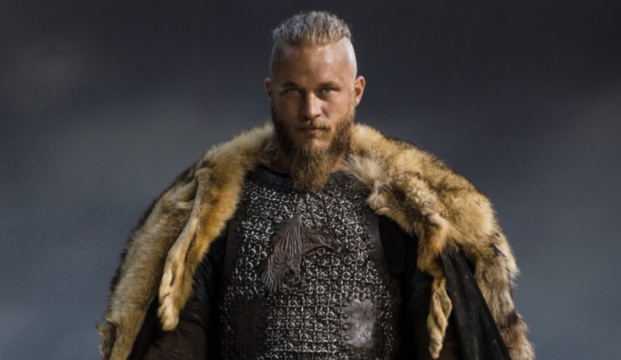
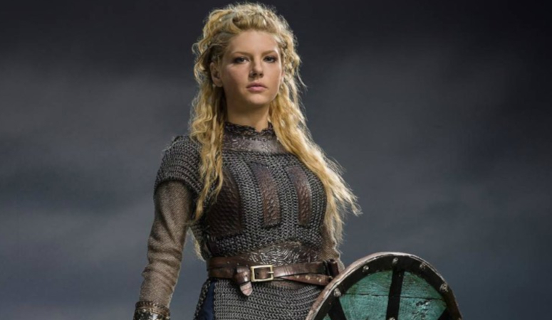
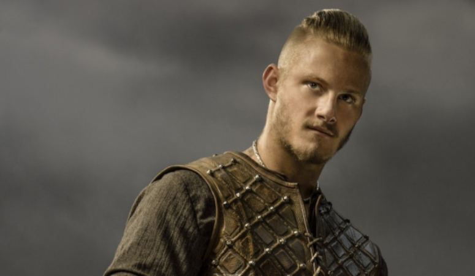
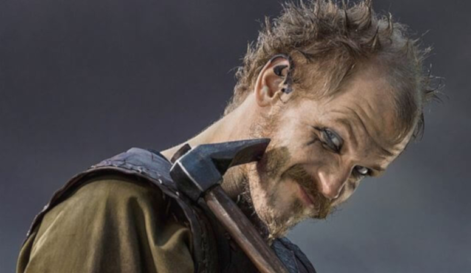
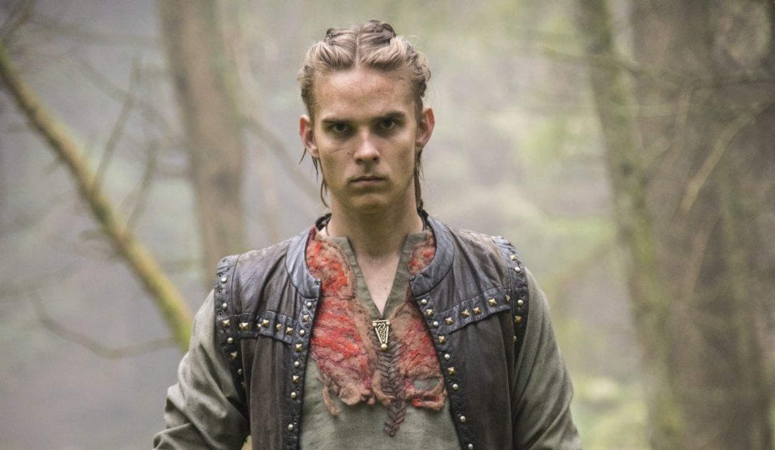
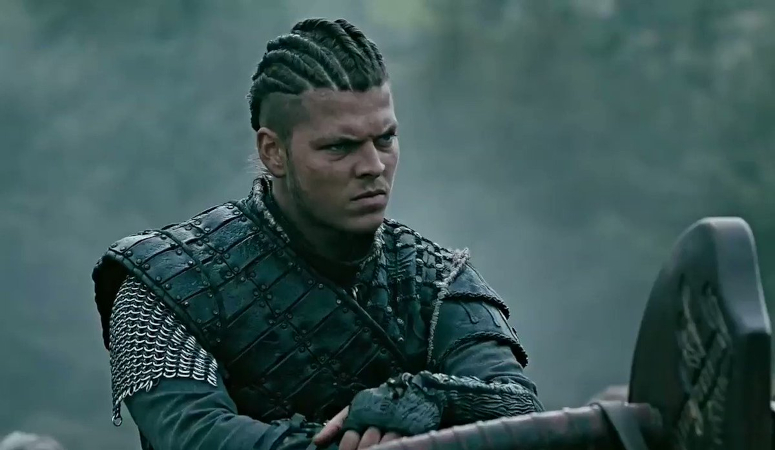
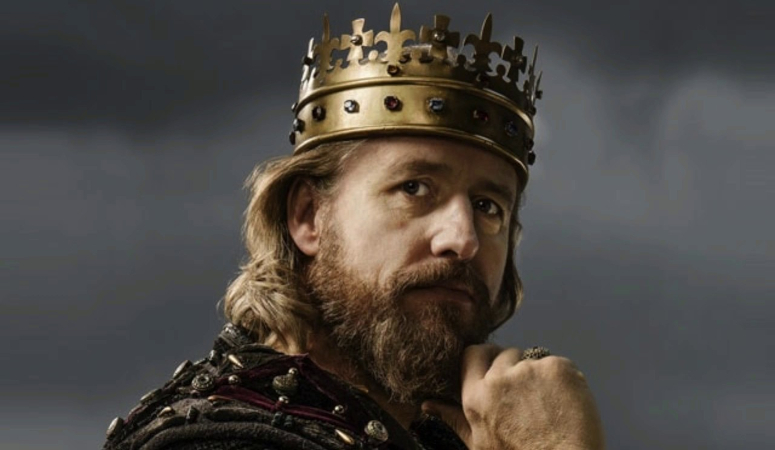
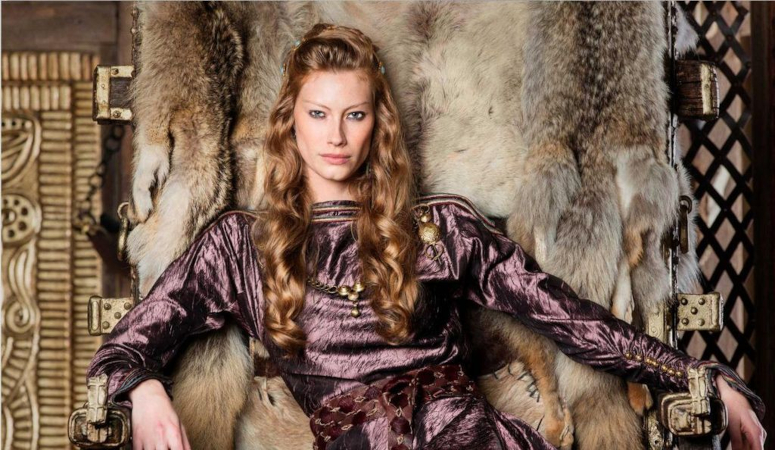
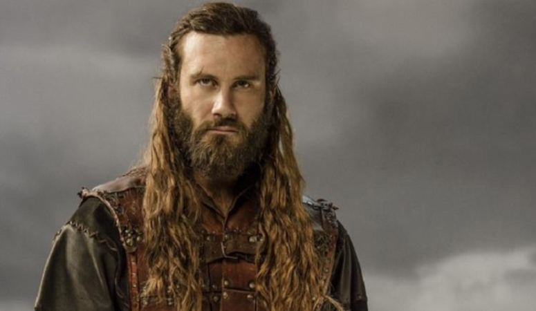
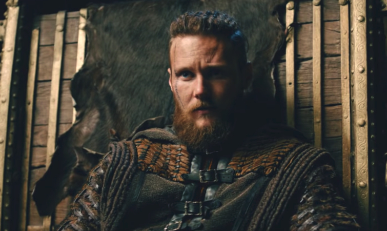
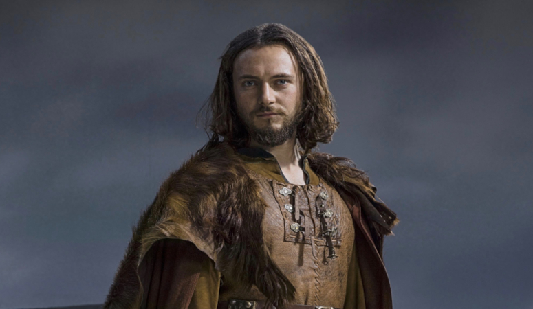
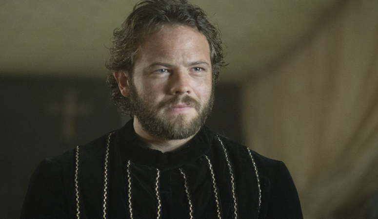
Ragnar
Ragnar is a Viking farmer and warrior who yearns to raid the rumored riches of undiscovered England. His first wife is Lagertha, and they have two children named Gyda and Bjorn. His second wife is Aslaug, and they have four sons named Ubbe, Hvitserk, Sigurd, and Ivar. Ragnar is the younger brother of Rollo.
Ragnar is a complicated person. He is smart, curious, ambitious, and not without his flaws. He can have times of great despair, impulsivity, doubt, and being overly fascinated with his death. Like all Norse warriors, Ragnar is brave in battle and respects worthy adversaries, such as Earl Haraldson and King Ecbert.
Lagertha
Lagertha, according to legend, was a Viking ruler and shield-maiden from what is now Norway, and the onetime wife of the famous Viking Ragnar Lodbrok.
Lagertha is a brave and ferocious shield-maiden with an unbreakable code of honor. She is also ruthless, bloodthirsty, fiercely ambitious, and desires to rule. She is a doting parent and continues to be very affectionate and motherly with Bjorn even after he reaches early adulthood. She is fiercely protective of those who can’t stand up for themselves, particularly unarmed women, children, and women with a child in need of help. She is especially protective of women from would-be rapists or abusive husbands.
Bjorn
Bjorn is the son of Ragnar and Lagertha and the oldest of Ragnar’s many sons. Bjorn Ironside, according to Norse legends, was a Norse Viking chief and Swedish king.
Bjorn is a great warrior in all respects, just like his father. As a young child he tries to keep his parents from fighting. He also wants to become a man in society so he can go on raids with his father and uncle. Like most Viking men, Bjorn yearns for glory on the battlefield and a place in Valhalla. He is passionate about fighting and eager to battle. He is a highly skilled warrior, even when he is young. He was strong enough to match Rollo in a drunken brawl and in his first battle is fast enough to get through without ever been struck.
Floki
A gifted but eccentric shipbuilder and friend of Ragnar. His ships create a revolution in shipwright techniques. He considers himself descended from the trickster god Loki. He is the husband of Helga, and they have a daughter named Angrboda.
Floki is regarded as an equal if nothing less than an individual of particularly high standing among the other warriors of Kattegat. Despite his seemingly nonchalant and apparently strange facade, Floki is very dedicated and proud of his work. He finds joy and often laughs during their plunders, whether he is killing or discovering new things in the land they visit. He is a man who is devoted to his gods and lives to serve them.
Hvitserk
Ragnar and Aslaug's second son. He enjoys battle and adventure and sides with his younger brother Ivar when Ivar and Ubbe fall out.
Hvitserk can be described as a very confused character. Hvitserk is a non-confrontational person, who likes to enjoy life when he's outside of battle. He is very indecisive, but sticks with the decisions once he makes them. As a warrior, Hvitserk leans toward being a Berserker- his second persona- and lets loose during battles, mimicking what he'd seen warriors do in battle.
Ivar
Ragnar and Aslaug's fourth and most violent son. A birth defect has rendered his legs useless and left him impotent. Ivar is more unstable than his brothers, sadistic and seemingly narcissistic. While publicly boastful, he is insecure and feels unloved except by his mother Aslaug.
Ivar is a sadist, sarcastic, angry, bloodthirsty, and violent person. Even as a child he is cruel and dangerous. He is the best archer and axe thrower of Ragnar’s sons, and is a match for at least Hvitserk and Sigurd with a sword, despite being unable to walk. His sheer rage and spite are enough to make him dangerous and feared. He has the most upper-body strength of his brothers due to having to drag himself by his arms to get anywhere for most of his life.
King Ecbert
Ruler of the most powerful kingdom in England. He dreams of becoming Bretwalda and becomes an unlikely friend of Ragnar. Based on the historical Egbert of Wessex.
King Ecbert is cold and calculating, but poses as friendly, understanding, and trustworthy. His true personality is one of ambitious, selfishness, and unscrupulous behavior. He is cares about no one beyond himself and is willing to sacrifice everyone and everything, including his only son Æthelwulf, to achieve his goals. Nevertheless, Ecbert is considered a great king. He is just and fair to his subjects.
Aslaug
Aslaug Sigurdsdottir is the second wife of Ragnar Lothbrok. She is the former Queen of Kattegat and the mother of Ubbe, Hvitserk, Sigurd, and Ivar. She is believed to be a völva, meaning she can see the future through visions.
Aslaug appears sweet and gentle at first, but never forget she is the daughter of Sigurd the Dragon Slayer and Brynhilder the shield-maiden and Valkyrie. Aslaug tends to treat friends and enemies with equal disdain. She is overconfident and arrogant. Perhaps her most notable trait is her rather epic tantrums when things aren’t going her way and her self-centeredness. Despite having some less than intelligent moments, Aslaug has proven to be a very capable ruler.
Rollo
Ragnar's brother. A ruthless and skilled warrior, but his life in his brother's shadow makes Rollo's feelings towards Ragnar change from love and admiration to hateful jealousy. Eventually, he defects to the Franks and is made Duke of Normandy. Based on the historical Rollo.
Rollo is known for being a fearsome warrior with an axe and an impulsive streak who is wrought with internal struggles. Rollo is a very strong, ferocious warrior and a bloodthirsty conqueror who never backs down from a fight that even in a wounded state, Rollo's power and skill as a warrior is fearsome.
Ubbe
Ragnar and Aslaug's first son. He is the most responsible of Aslaug's sons, and does not initially take part in raiding, preferring to stay and protect Kattegat.
Compared to his brothers, Ubbe is a compassionate soul and the one who most desires Ragnar's dream of peace. He is also sharp, assertive, cunning, responsible, and loyal. Ubbe is the most honest and moral of his brothers, He is the son who has the most of Ragnar's positive traits like compassion and forethought for others. Ubbe is an intelligent and capable leader. He shows quick thinking and resourcefulness in battle. A skilled warrior, he can fight with sword, axe, knife, and shield. He is a warrior without being a berserker like some of his other family members.
Athelstan
An Anglo-Saxon monk from the monastery of Lindisfarne in Northumbria. Captured by Ragnar on his first raid, Athelstan is constantly torn between the customs of Christian England and the pagan ways of Scandinavia.
Athelstan is a kind, trustworthy, authentic, gentle, and sincere person. As a monk, Athelstan works as a scribe and is very well read, including having read most scientific knowledge that is available at the time. He is one of the most educated characters. He can read and write in multiple languages. He appreciates books the most, and anything that involves writing and painting.
Aethelwulf
Son of King Ecbert. He is married to Princess Judith, with whom he has a son, Prince Aethelred.
Aethelwulf is doggedly determined to be a good man, a stalwart Christian, a dutiful son, a strong warrior, and live up to the expectations placed on him since his birth. Unfortunately for Aethelwulf, he lacks the political acumen and keen intelligence of his father. He is a fine warrior on the battlefield, not a particularly bad ruler of Wessex, and his loyalty and commitment to his family and kingdom is admirable. But he constantly finds himself being outmatched by everyone around him in some way, including by Ragnar, Athelstan, Ivar, and his father.